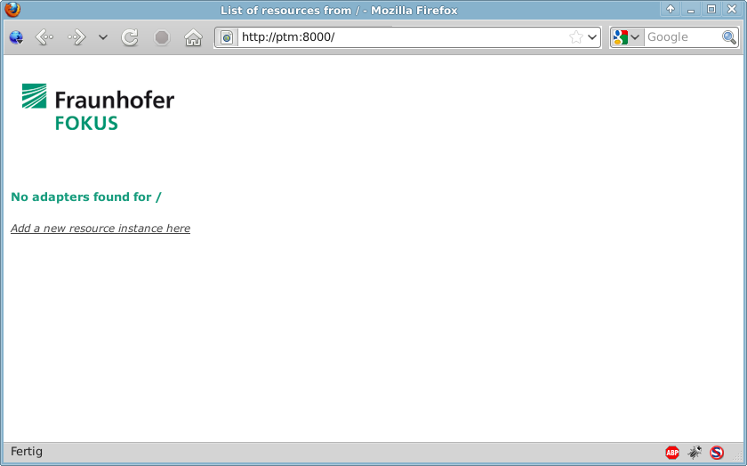
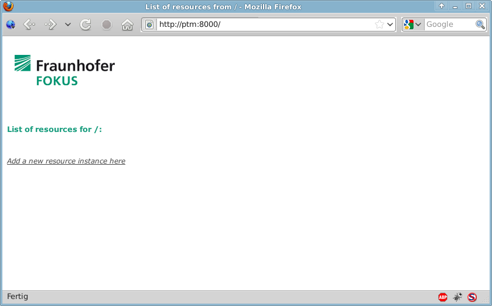
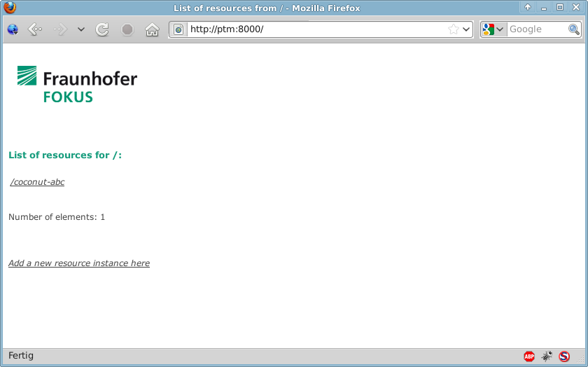
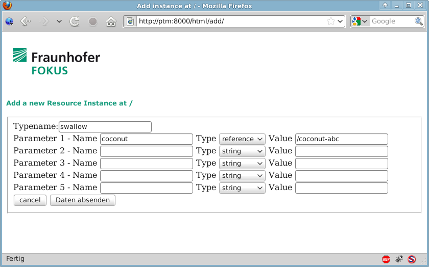
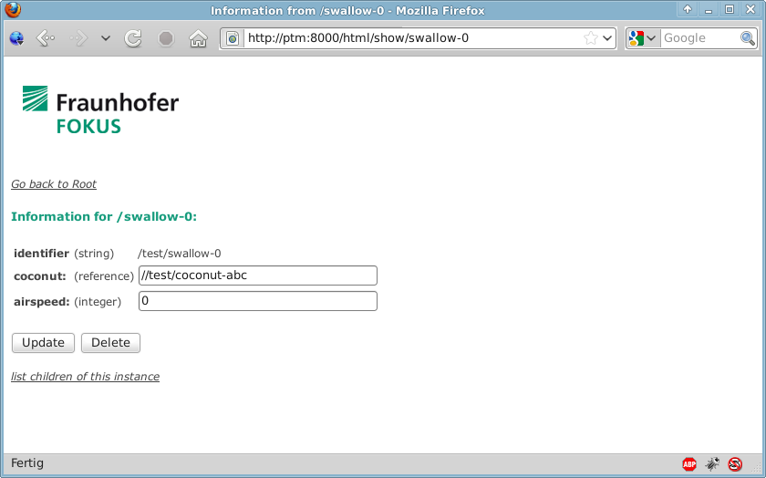

0. Installation
Just unpack the provided archive anywhere. By default, the system will assume that it gets installed to /opt/ptm. If you install to a different location you will have to set the PTM_HOME environment variable.
For the webfrontend to work you will need two python libraries installed:
Normally, you should be able to install both through your distributions usual mechanisms (apt-get, yum, emerge,...).
1. Overview
for a high level overview about what this is all about, be sure to also read
IPOM2009.pdf
General
The three main concepts of this framework Resources, ResourceAdapters and Managers. All three represented by a java interface or python base class.
- Resources are what this is actually all about. They represent physical or logical assets like Servers, Instances of software packages or user accounts. Each resource is identified by an id which is unique across the PTMs domain.
There are to types of dependencies between resources: containment and reference. Resources are arranged in a hierarchical way, meaning that one resource can contain zero or more child resources while it has zero or one parent resources. Consider for example a virtual linux server as a root resource. It could contain an arbitrary number of Mysql Servers each of which could contain an arbitrary number of databases, users and so on. On the other hand the server might also contain another resource which uses a mysql database to store data. This resource would have a reference to a mysql database.
Also resources can expose functions and always have a set of configuration data, consisting of a mapping of key-value pairs. Keys are always strings while values can be any primitive data type like Integer, Bool, etc., other Resources as well as arrays and Mappings (java.lang.Map) of those.
In order to implement a resource you would implement the de.fhg.fokus.ptm.Resource interface.
- ResourceAdapters are responsible for creating, finding and deleting resources. They can be responsible for one or more types of resources. ResourceAdapters are also identified by an id, however in the current state of the implementation, this ID is the same as their managers ID. Several adapters can have the same id, and it is their managers job to distribute requests among them. In order to implement a ResourceAdapter you would implement de.fhg.fokus.ptm.ResourceAdapter (in Java) or extend ptm.AbstractResourceAdapter (in python)
- Managers are the gateway between one or more ResourceAdapters and the PTMs network. They serve three purposes:
- Abstraction of the underlying provisioning scheme and transport.
- Accept incoming requests and route them to the appropriate resource adapters.
- Serve as a client for attaches ResourceAdapters and allow them to access other Resources within the PTM.
You should generally not need to implement a manager unless you want to introduce new provisioning schemes or transports.
The Hub
The Hub is a central authority which keeps track of all Managers and how to reach them. It has to run in order for the whole system to work, but apart from that you should not have to bother with it. Currently, it is only available in python. To launch it, execute "$PTM_HOME/bin/ptmhub [port]". If you omit the port number it will default to 8000. After it is running, you should be able to access the PTM's webfrontend at http://localhost:8000
Many components expect by default to find the hub at http://ptm:8000. This is configurable, but if you want to make you life easier just add "ptm" to /etc/hosts (On Windows: %SystemRoot%\system32\drivers\etc\hosts).
IDs
the current implementation uses an hierachical ID scheme which reproduces the containment hierarchy between resources. There is an important distinction between the ID of a manager or adapter (which ends with a '/') and the ID of a resource (which does not). Each part of an id has type and name information encoded. Ids look somewhat like Unix file system paths:
- /xennode-36 <--a resource of type xennode and name 36.
- /xennode-36/mysql-42 <-- a mysql resource inside xennode_36
- /xennode-36/mysql <-- a RA responsible for managing instances of the type mysql inside /xennode-36
- /xennode-36/mysql-42/ <-- a RA responsible for managing instances of any type inside /xennode-36
RA implementation
This section is under development. Please refer to the provided examples in the meantime.
to run the python examples, use the provided rarunner script (in $PTM_HOME/bin):
# rarunner <Fully qualified RA class name>
e.g.: # /opt/ptm/bin/rarunner SimpleTestAdapter.SimpleTestAdapter.SimpleTestAdapter
to run the java examples, use the provided jra script (in $PTM_HOME/bin):
# jra <Fully qualified RA class name>
e.g.: # /opt/ptm/bin/jra de.fhg.fokus.ptm.example.simple.SimpleAdapter
Windows users: Please note that the launcher files expect the python executable to be in %PATH%
2. Example Walkthrough
This section details the steps needed to run one of the examples, which is the coconut/swallow example. For details regarding these resource types, please refer to the adapter's implementation in examples/swallow.
Please note, that this example assumes that the machine the components are running on is reachable under the DNS name "ptm". It is usually most convenient to add this to /etc/hosts for testing.
First, change to the directory you installed the PTM archive and start the server itself:
# ./bin/ptmhub
After you did this, you should be able to open the PTM's web interface in a browser at http://ptm:8000. the result should look like this:

Pretty much the only information that is conveyed here is the fact that currently no adapters are running. To remedy this situation, we start the two adapters needed in this example:
# bin/jra de.fhg.fokus.ptm.example.swallow.CoconutAdapter
# bin/jra de.fhg.fokus.ptm.example.swallow.SwallowAdapter -p 8009
Note that we specified a different port for the second one via the "-p" parameter. While it is perfectly possible to run several adapters within the same environment and hence on the same port, it is usually more convenient to keep them seperated.
When we now open the PTM's interface, the situation has changed slightly:

Instead of being told that no RA's are present, we now see an empty resource list. This is due to the fact that actually now there are adapters available, but no resources have been instantiated yet.To do this, we can click on the "add resource instance" link, which leads us to the following page:

In this example, we instantiate a resource of the type "coconut". The only configuration parameter it receives from us at this point is its name. After submitting the form, the appropriate methods get called on the resource adapter and the resulting instance is shown in the resource list:

We now want to use this newly created instance as part of the configuration of another instance. In order to do so, we again click the add resource link:

Here, we have inserted the identifier of our newly created coconut ("/coconut-abc") as the value for the "coconut" parameter, that specifies which coconut our swallow has to carry. Note that we had to choose "reference" as the type of this value.
Upon success, the newly created swallow resource shows up in the resource list as well:

By clicking on its identifier, we can examine the configuration of this instance which includes the read-only parameter "airspeed" that was calculated based on the weight of the coconut carried:
